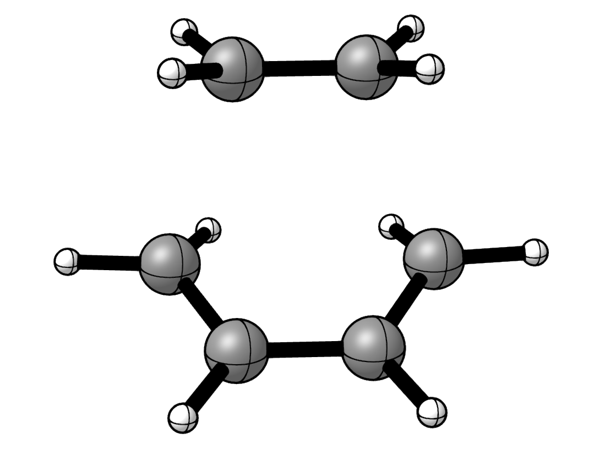
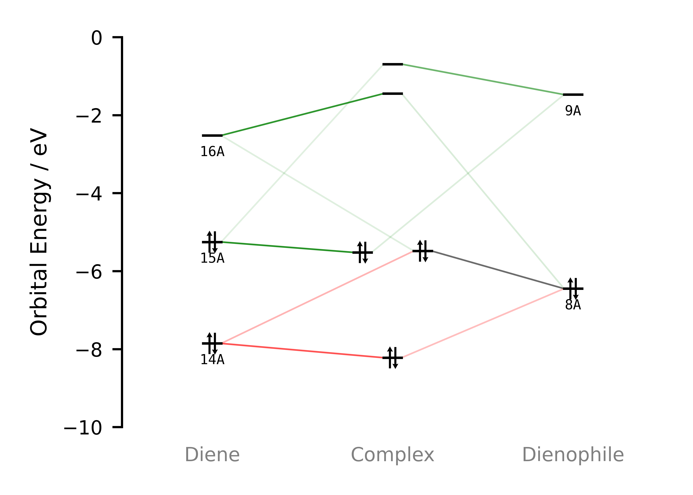
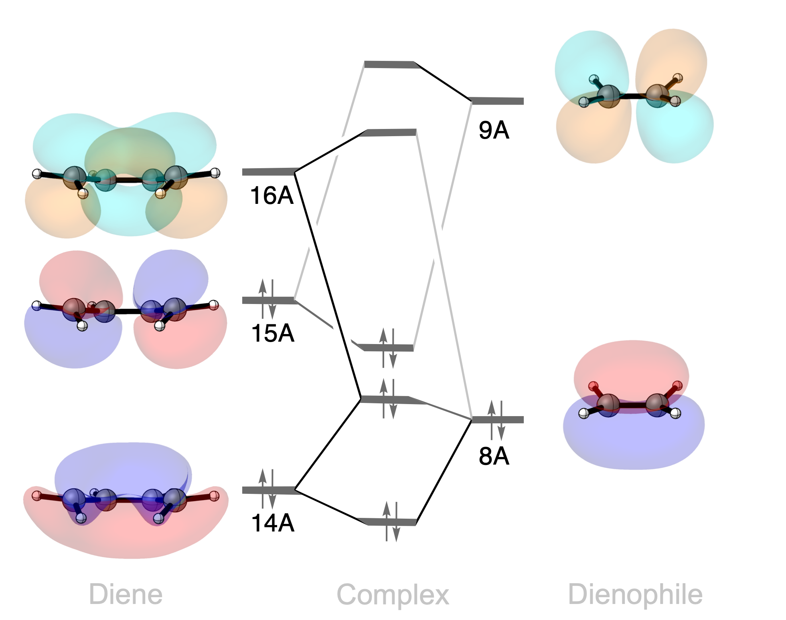

Diels–Alder Transition State#
Introduction#


Transition state for the cycloaddition of buta-1,3-diene and ethylene.#
The Diels–Alder reaction combines a conjugated diene and a dienophile to form a new six-membered ring. Two new carbon–carbon bonds form as the \(\pi\)-systems of the reactants reorganize.[2][3][4][5][6][7]
In this example, we use PyOrbb to examine the transition state of the reaction between buta-1,3-diene and ethylene. The analysis identifies both normal and inverse electron demand mechanisms, together with an occupied–occupied interaction that contributes to Pauli repulsion.[1]
Usage#
Load the calculation#
Download the example file:
DielsAlder.rkf.Open PyOrbb and drag the
DielsAlder.rkffile into the application.
The interaction diagram shows the selected interactions between the diene and dienophile FMOs.
View the orbitals#
Select an orbital in the interaction diagram.
Click the orbital-viewer control labelled
φ.
Inspect the orbitals on both fragments, using a viewing direction that shows the two forming carbon–carbon bonds. Compare the phases and amplitudes at the terminal carbon atoms of the diene and at the two carbon atoms of ethylene.
Analysis#


Selected orbital interactions between buta-1,3-diene and ethylene.#


Schematic orbital interaction diagram with the corresponding orbitals.#
Donation from the diene#
The normal-electron-demand (NED) mechanism involves donation from an occupied \(\pi\)-orbital on the diene into a virtual \(\pi\)-orbital on the dienophile. In the frontier-orbital description, this is the interaction between the diene HOMO and the ethylene LUMO.
The diene HOMO has opposite phases at its terminal carbon atoms, matching the phase pattern of the ethylene \(\pi\)-antibonding LUMO. In the cycloaddition geometry, these orbitals can overlap constructively at both forming bonds. Their mixing provides a stabilizing contribution to the interaction between the fragments.
Donation from the dienophile#
Donation also occurs in the opposite direction: an occupied \(\pi\)-FMO on ethylene interacts with a virtual \(\pi\)-FMO on the diene. This is the inverse-electron-demand (IED) channel, represented in the frontier-orbital description by the ethylene HOMO and the diene LUMO.
The ethylene HOMO has the same phase on its two carbon atoms. The diene LUMO likewise has matching phases at its terminal carbon atoms, allowing constructive overlap at both forming bonds.
NED and IED describe the two directions of donation in this analysis. Their presence does not mean that the reaction follows two separate mechanisms, nor does it establish which channel is energetically more important. Both contribute to the orbital interaction at the same transition-state geometry.
Pauli repulsion#
PyOrbb also identifies the interaction between the diene HOMO−1 and the dienophile HOMO. The diene HOMO−1 is the in-phase combination of the diene \(\pi\)-system, while the ethylene HOMO is its occupied \(\pi\)-bonding orbital. Their spatial overlap contributes significantly to the Pauli repulsion discussed in the main article.[1]
Unlike the donation channels, both orbitals are occupied. Their overlap requires the occupied orbitals of the combined system to become orthogonal, giving rise to a destabilizing contribution. A favourable phase pattern therefore does not, by itself, imply a stabilizing interaction: orbital occupation matters as well.
This example shows both sides of the interaction between the approaching reactants. Occupied–virtual mixing stabilizes the system, while occupied–occupied overlap contributes to Pauli repulsion. Orbital plots help identify these contributions, but their shapes alone do not give their energetic balance or the overall activation barrier.